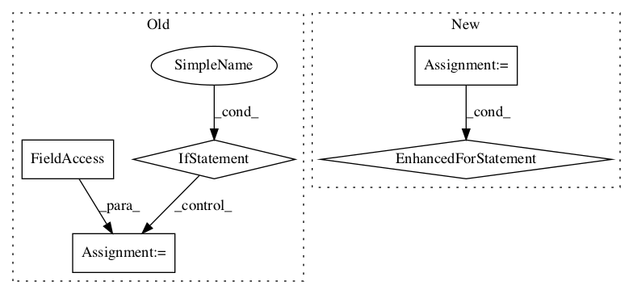

d98df66f581dca38bbe7dfc299386921b65bda0d,solutionbox/code_free_ml/mltoolbox/code_free_ml/trainer/task.py,,make_prediction_output_tensors,#Any#Any#Any#Any#Any#,364

Before Change
probabilities = model_fn_ops.predictions["probabilities"]
// if top_n == 0, this means use all the classes.
if args.top_n == 0:
top_n = probabilities.shape[1].value
else:
top_n = args.top_n
// get top k labels and their scores.
(top_k_values, top_k_indices) = tf.nn.top_k(probabilities, k=top_n)
top_k_labels = table.lookup(tf.to_int64(top_k_indices))
// Write the top_k values using 2*top_n columns.
After Change
predicted_index = tf.argmax(probabilities, axis=1)
predicted = table.lookup(predicted_index)
outputs.update({PG_CLASSIFICATION_FIRST_LABEL: predicted})
probabilities_list = tf.unstack(probabilities, axis=1)
for class_name, p in zip(class_names, probabilities_list):
outputs[class_name] = p
else:
top_n = args.top_n
// get top k labels and their scores.
In pattern: SUPERPATTERN
Frequency: 4
Non-data size: 5
Instances
Project Name: googledatalab/pydatalab
Commit Name: d98df66f581dca38bbe7dfc299386921b65bda0d
Time:
Author: null
File Name: solutionbox/code_free_ml/mltoolbox/code_free_ml/trainer/task.py
Class Name:
Method Name: make_prediction_output_tensors
Project Name: SPFlow/SPFlow
Commit Name: ddf383126170561049c33b95821b5bf35971147d
Time:
Author: null
File Name: src/spn/algorithms/Validity.py
Class Name:
Method Name: is_consistent
Project Name: kermitt2/delft
Commit Name: 56a16de2cd288032548267281a2daf69d479f8eb
Time:
Author: null
File Name: delft/sequenceLabelling/models.py
Class Name: BERT_Sequence
Method Name: __init__
Project Name: SPFlow/SPFlow
Commit Name: ddf383126170561049c33b95821b5bf35971147d
Time:
Author: null
File Name: src/spn/algorithms/Validity.py
Class Name:
Method Name: is_complete